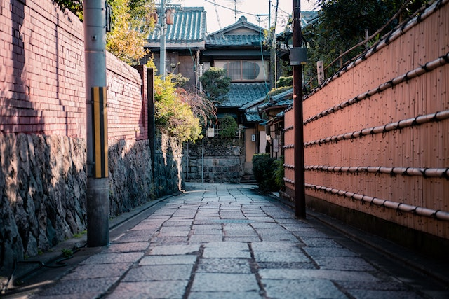
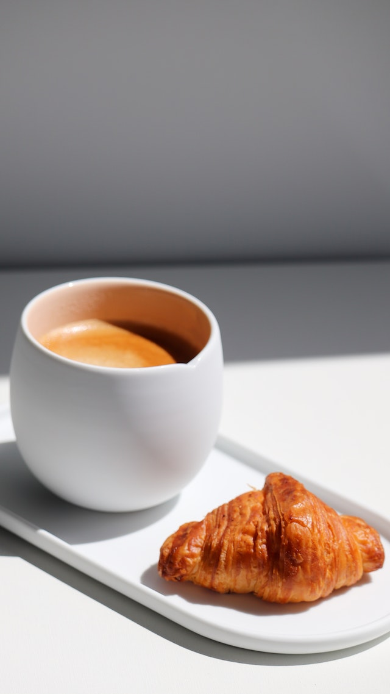
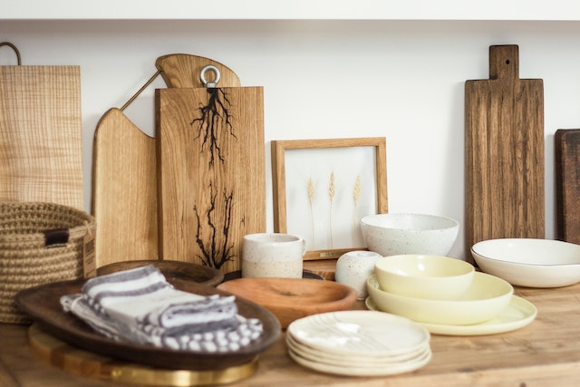
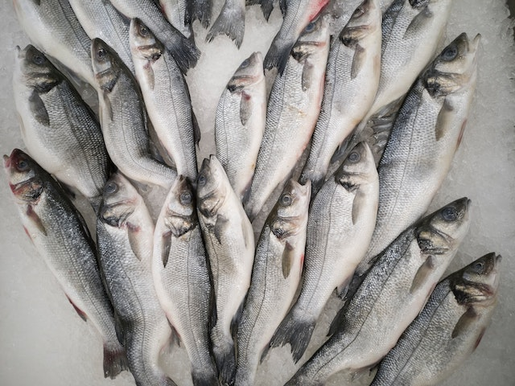

◇◇◇
京味是專有名詞，代表京都最獨特、纖細、典雅的味覺。京豆腐特別綿密、京蔬菜特別甜美、京蛋捲特別鬆軟、京漬物特別鮮脆、京佃煮特別有味、京茶漬特別豐富。我沉溺在京都味覺。二十餘年，京味不僅是我口舌之味，亦是靈魂之味。世上哪有城市比京都人更重視時令、風土、自慢的精神，從山椒自慢到湯豆腐，從懷石料理到有職料理，從鯖壽司到鮒壽司，從湯葉到麩饅頭，京都之味貫穿歷史時代、季節的時空，是最悠揚古老的城市味覺行板。
◇◇◇
我在衡量一個城市常民飲食的豐富與否，根據的絕不是這個城市的午餐、晚餐，因為午晚餐和商業活動有關，如倫敦、紐約、巴黎的午晚餐都很發達，也有許多美味可選擇，但早餐卻較單調，吃來吃去不外乎太陽蛋、蛋捲、培根、火腿、香腸、吐司、鬆餅、可頌、咖啡、茶……等。
◇◇◇
在涼州街上還有一攤專門賣鯊魚煙的店家，幾種不同種類的鯊魚，在按不同的部位可以切成一盤十幾種口味形狀都不同的鯊魚煙，瑞美都吃呆了，對她而言，台灣人這樣吃鯊魚，比吃蝗蟲還讓她驚訝。我帶瑞美一大早吃吃喝喝見識台北食文化，當然有心跟馬德里比苗頭，果然我讓台北占了上風。
◇◇◇
從童年開始，我就知道每家灶神愛吃不同的東西。像爸爸的灶神，是從他老家江蘇南通帶來台北的，這個灶神愛吃江北煮得爛糊糊的麵，愛吃冬季裡過霜熬得稠兮兮的白菜，也愛用好多大蒜慢煨出來的紅燒黃魚，在台北沒有東海的黃魚賣，爸爸只好買金門的大黃魚來祭灶神和他自己的五臟廟。
◇◇◇
這是一個對於直行排版的測試，因為測試者沒什麼文采，使用了韓良露老師的散文。在此註記，文字皆非本人創作。